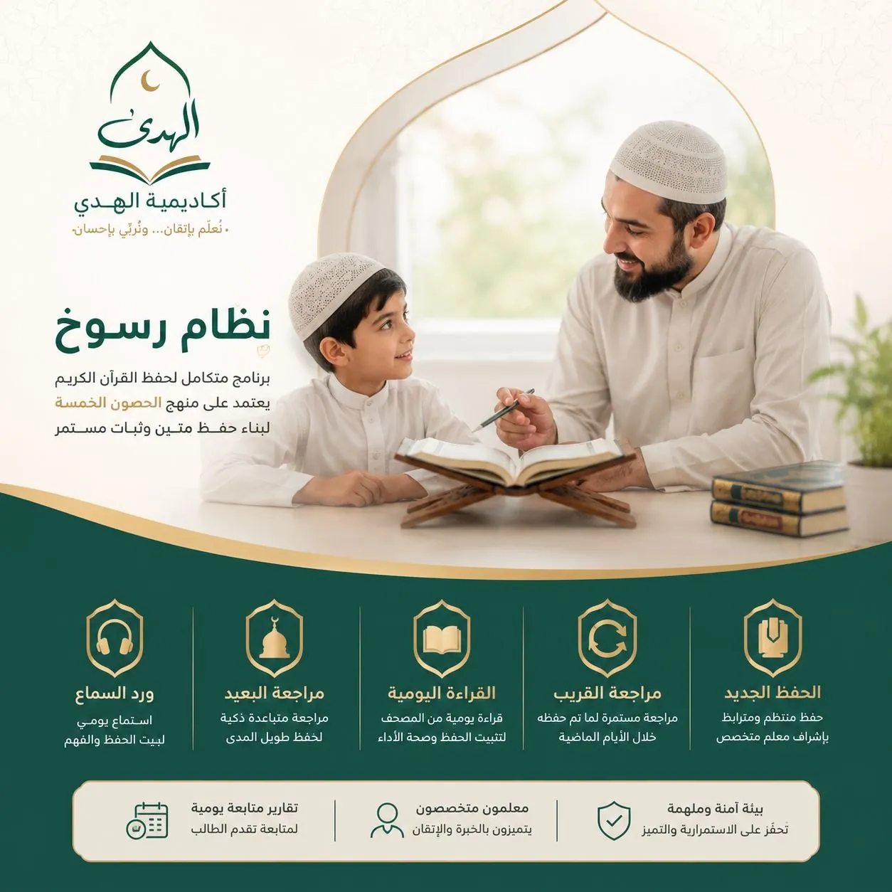

اختيارك يبدأ هنا
اختر طريقك في التعلّم
لأن لكل طالب ظروفه وأهدافه، صممنا نظامين تعليميين يمنحانك المرونة والإتقان مع الحفاظ على جودة المتابعة وبناء علاقة راسخة مع كتاب الله.

نظام رسوخ
برنامج متكامل لحفظ القرآن الكريم يعتمد على الحصون الخمسة، ويهدف إلى بناء حفظٍ متين مع متابعة يومية ومراجعة مستمرة.
- الحفظ الجديد
- مراجعة القريب
- القراءة اليومية
- مراجعة البعيد
- ورد السماع

النظام المرن
برنامج مرن يعتمد على ثلاثة حصون أساسية، يناسب الطلاب الذين يرغبون في تنظيم رحلتهم بما يتناسب مع وقتهم وأهدافهم.
- الحفظ الجديد
- مراجعة القريب
- مراجعة البعيد